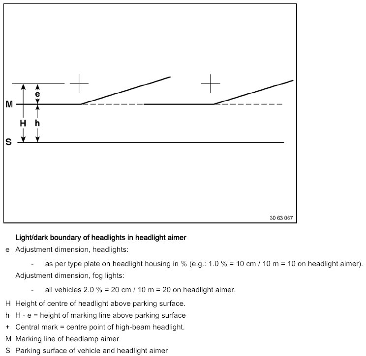

63 10 ... Test Requirements For Headlights Vertical Aim Adjustment
63 10 ... Test Requirements For Headlights Vertical Aim Adjustment

- Car parked on level ground.
- Replace faulty glass and mirrors and blackened light bulbs.
- Check tyre pressure and correct if necessary.
- Apply load equivalent to one person on driver's seat (approx. 75 kg).
- Vehicle with full fuel tank or appropriate additional weight in luggage compartment.
- Correct adjustment of headlights in relation to engine hood (gap dimensions).
- Manual headlight vertical aim control: Turn hand wheel to 0 position.
- Automatic headlight vertical aim control: Wait approx. 30 seconds after switching on lights.
- Version with xenon headlights: Wait 80 seconds after switching on lights. During this time, do not move the vehicle and avoid vibrations.
- Align headlight aimer with vehicle longitudinal axis and parallel to parking surface. Set marking line (M) on aimer to distance (e). Scale graduations on aimer are equal to a gradient in cm at a distance of 10 meters.

Adjustment dimension (e) is only valid for EUR. Observe differing national regulations.